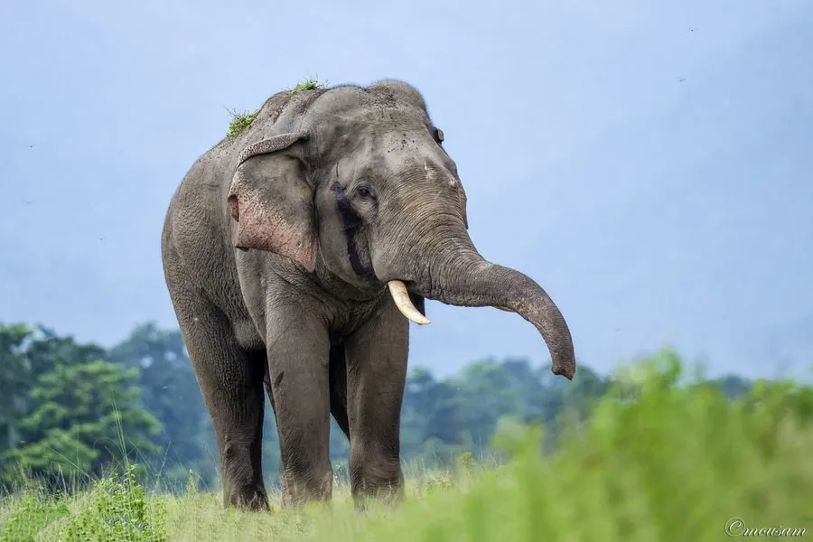

哺乳动物 · 动物界
亚洲象 Elephas maximus

亚洲现存最大的陆生动物，鼻端只有一根指状突，性情相对温和、智慧很高，受栖息地破碎与盗猎威胁。
- 分类
- 门脊索动物门纲哺乳纲目长鼻目科象科属亚洲象属
- 栖息环境
- 热带雨林、季雨林、疏林草原和灌丛，需要充足水源与遮阴
- 地理分布
- 南亚、东南亚 13 个国家，中国云南南部有残存种群
- 保护级别
- IUCN 濒危（EN）；中国国家一级保护动物
物种志
亚洲象肩高 2.5–3 米，体重 3000–5000 kg，象鼻长达 1.5 米以上，末端只有一个指状突起，能卷起细小的草叶。它的耳朵比非洲象小得多，可以减少散热面积；背部略呈拱形，皮肤上常带粉色的脱色斑块，部分雄象会长出象牙，雌象通常没有。
亚洲象栖息于热带雨林、季雨林和疏林草原，每天花 14–18 小时进食，吃掉 100–150 kg 草、树叶、树皮和果实，饮水约 100 L。象群是以最年长雌象为首的母系氏族，由 5–20 头亲缘个体组成；雄象成年后离群独居，繁殖季才短暂接近象群。它们能发出人耳听不到的次声波，与数千米外的同伴联络。亚洲象分布于南亚和东南亚 13 个国家，中国仅云南南部有约 300 头野生个体，人象冲突与栖息地丧失是主要威胁。
形态与习性
- 食性草、树叶、树皮与果实，每天进食 100–150 kg
- 肩高2.5–3 m
- 体重3000–5000 kg
- 寿命野外 60–70 年
- 繁殖妊娠期 18–22 个月，每胎 1 仔
- 社会结构母系群，由最年长雌象领导
- 活动节律多在晨昏和夜间进食，每天进食 14–18 小时
趣味知识
- 亚洲象鼻端只有一个指状突起，非洲象则有两个。
- 并非所有雄象都长象牙，没有象牙的个体在野外更少被猎杀。
- 象群能用次声波交流，声音可传到数千米之外。
- 亚洲象每天可吃掉 100–150 kg 植物，同时散播大量种子。
生态关系
- 传播 → 无花果 大象取食果实并长距离传播种子